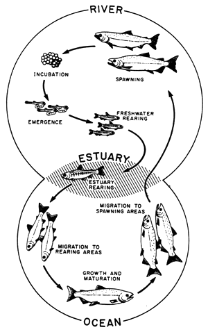

You should spend about 20 minutes on this task.
The diagram below shows the life cycle of a salmon, from egg to adult fish.
Summarise the information by selecting and reporting the main features and make comparisons where relevant.
Write at least 150 words.

Tips:
Write your description of the diagram by answering the following questions:
1.Where and in what form do salmon begin their lives?
2.When the young salmon emerge from eggs, where are they reared?
3.Before swimming to the ocean, where do the young fish migrate to?
4.What happens to salmon during their time in the ocean?
5.Where do the adult fish then travel to, and why?
6.What happens that completes the cycle?
How do you write an overview or summary about a 'life cycle' diagram?
1. Count the number of stages in the life cycle.
2. Decide on a beginning and an end point in the cycle.
The diagram illustrates the stages in the life of the salmon, from birth to maturity.
It is clear that there are six* main stages as the salmon develops from egg to mature adult. We can also see that salmon spend time in three distinct locations during the cycle, moving from river to estuary to ocean and then back upstream.
Salmon begin their lives in rivers where the adult fish lay and incubate their eggs. After emerging from eggs, the young salmon spend the next stage of their lives being reared in freshwater areas. Then, at some point in their development, the fish swim downstream to river estuaries where rearing continues.
Following the estuary rearing period, the maturing salmon migrate to the ocean, where they eventually become fully grown adults. Finally, the adult fish travel back upstream to spawning areas of rivers; here they reproduce and lay their eggs, and the life cycle begins anew.
(154 words, band 9)
Write about the following topic.
It is inevitable that traditional cultures will be lost as technology develops. Technology and traditional cultures are incompatible.
To what extent do you agree or disagree with this view?
Give reasons for your answer and include any relevant examples from your own knowledge or experience.
Some people believe that technological developments lead to the loss of traditional cultures. I partly agree with this assertion; while it may be true in the case of some societies, others seem to be unaffected by technology and the modern world.
On the one hand, the advances in technology that have driven industrialisation in developed countries have certainly contributed to the disappearance of traditional ways of life. For example, in pre-industrial Britain, generations of families grew up in the same small village communities. These communities had a strong sense of identity, due to their shared customs and beliefs. However, developments in transport, communications and manufacturing led to the dispersal of families and village communities as people moved to the cities in search of work. Nowadays most British villages are inhabited by commuters, many of whom do not know their closest neighbours.
On the other hand, in some parts of the world traditional cultures still thrive. There are tribes in the Amazon Rainforest, for example, that have been completely untouched by the technological developments of the developed world. These tribal communities continue to hunt and gather food from the forest, and traditional skills are passed on to children by parents and elders. Other traditional cultures, such as farming communities in parts of Africa, are embracing communications technologies. Mobile phones give farmers access to information, from weather predictions to market prices, which helps them to prosper and therefore supports their culture.
In conclusion, many traditional ways of life have been lost as a result of advances in technology, but other traditional communities have survived and even flourished.
(266 words, band 9)